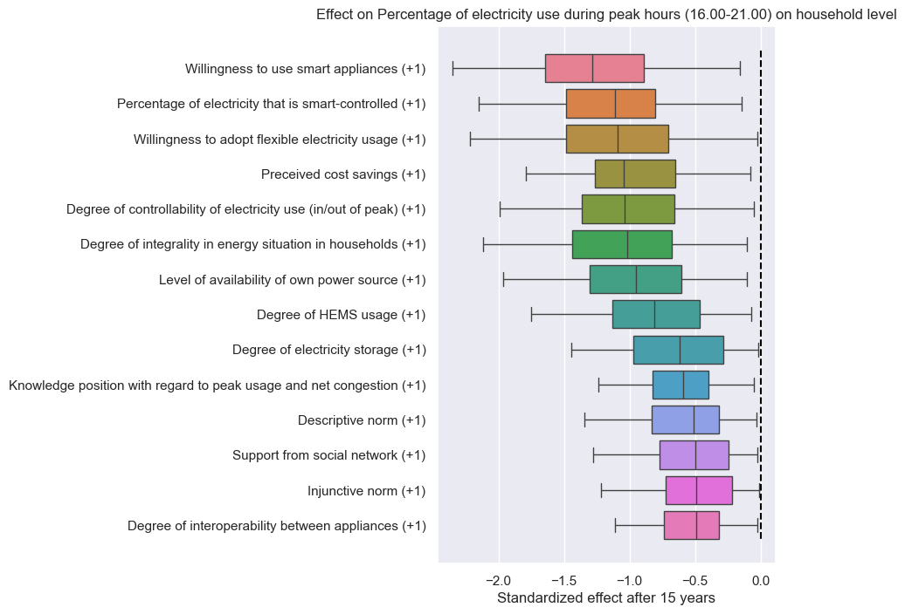
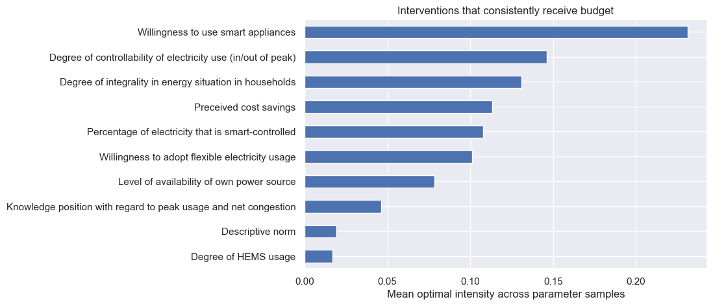

How it works
Causal loop diagrams capture how experts and stakeholders believe a system works, but they are qualitative. SIP turns them into computational system dynamics models: every causal link gets a sampled coefficient, the system is simulated many times, and the results show which interventions move your outcome — and how confident you can be, given the uncertainty.
What it can do
CLD → dynamic model
Reads a Kumu-style Excel workbook (variables, links, polarities) and builds a stock–auxiliary–constant ODE model automatically.
Simulation under uncertainty
Samples unknown link coefficients and simulates every candidate intervention across hundreds of parameter draws.
Intervention ranking
Effect distributions per intervention, pairwise comparisons with bootstrapped confidence intervals, and sensitivity analysis of the driving links.
Budget optimization
Optimally splits a budget across all interventions at once — expenditure-space formulation with multi-start SLSQP that scales to dozens of interventions and reports near-optimal alternatives.
Loops That Matter
Scores every feedback loop's contribution to the model's behavior over time (Schoenberg–Davidsen–Eberlein method).
Custom equations
Make any relationship nonlinear straight from the Excel file: sampled parameters (#1), intervention placement ($), and numpy functions.
In action: household peak energy use
The figures below come from the included Insulation tutorial, built on causal loop diagrams from the SEVEN project (University of Amsterdam) on household energy decisions — 57 variables, 21 feedback loops, and 51 candidate interventions on the share of electricity used during peak hours.


Quick start
git clone https://github.com/vvvasconcelos/SystemsInsightPipeline.git
cd SystemsInsightPipeline
pip install -e .from sip_systemsinsightpipeline import Extract, SDM, SDMOptimizer
s = Extract("tutorials/Minimal.xlsx").extract_settings()
s.seed, s.N, s.t_end, s.time_unit = 12345, 100, 10, "years"
s.parameter_value_aux = s.parameter_value_stocks = 0.1
sdm = SDM(s)
sdm.run_simulations()
effects = sdm.get_intervention_effects()
result = SDMOptimizer(sdm).optimize_intervention_intensities(
params=sdm.sample_model_parameters(),
costs=[1.0] * len(s.intervention_variables),
budget=1.0, maximize=True, n_starts=8, seed=1,
)Citation
Uleman, J.F., Crielaard, L., Elsenburg, L.K., Veldhuis, G.A., Rod, N.H., Quax, R., & Vasconcelos, V.V. Diagrams-to-Dynamics (D2D): Exploring Causal Loop Diagram Leverage Points under Uncertainty. BMC Medicine (in press). Preprint: arXiv:2508.05659.